Riemann For Anti-Dummies--Part 61
To What End Do We Study
Riemann’s Investigation of Abelian Functions?
by Bruce Director
On June 10, 1854, Bernhard Riemann shocked the world by stating
the obvious:
For more than two thousand years scientists had accepted, as dogma, that the
axioms of Euclidean geometry were the only foundation for science, despite the
fact that science had been left in the dark as to whether these axioms had any
physical reality. “From Euclid to Legendre, to name the most renowned
writers on geometry, this darkness has been lifted neither by the mathematicians
nor by the philosophers who have labored upon it.” The axioms of Euclidean
geometry are, Riemann said, “like all facts, not necessary but of a merely
empirical certainty; they are hypotheses; one may therefore inquire into their
probability, which is truly very great within the bounds of observation, and
thereafter decide concerning the admissibility of protracting them outside the
limits of observation, not only toward the immeasurably large, but also toward
the immeasurably small.”
Though Riemann’s words were welcomed by the aged Gauss, (who had long
held but rarely publically stated this view), they were inimical to the Kantianism
that had come to dominate a significant part of European science since the oligarchy’s
suppression of Benjamin Franklin’s Leibnizian allies, that had accelerated
with the French Revolution and its aftermath. Kant and his successors had preached
the evil doctrines of a hermetic separation between the workings of the mind
and the physical world, and, a hermetic separation within the mind between scientific
and artistic thinking. The former dictated that man was doomed to impose on
the physical world the axioms of Euclidean geometry, no matter what physical
evidence contradicted it. The latter insisted that man’s mental processes
were limited either to the cold logic that Kant falsely attributed to science,
or the unknowable irrationality that he erroneously described as art.
As a proponent of Friedrich Schiller’s collaborator Herbart, and a student
of Abraham Kaestner’s protege Gauss, Riemann saw through these Kantian
sophistries. Like Plato, Cusa, Kepler and Leibniz before him, Riemann recognized
that though sense perception cannot tell us anything truthful about the physical
universe, the mind’s power to form hypotheses can. Following Herbart,
Riemann noted that such hypotheses are not formed {a priori} as Kant insisted,
but only by the mind’s investigation of physical causes. These hypotheses,
Riemann emphasized, must be constantly improved, “under the compulsion
of facts that it cannot explain.”
Thus, scientific progress occurs through a succession of paradoxes which challenge
the prevailing way of thinking. As Riemann wrote in his posthumously published
philosophical fragments:
“Natural science is the attempt to understand nature by means of exact
concepts.
“According to the concepts through which we comprehend nature, our perceptions
are supplemented and filled in, not simply at each moment but also future perceptions
are seen as necessary....
“To the extent that what is necessary or probable, according to these
concepts, takes place, then this confirms the concepts, and the trust that we
place in these concepts rests on this confirmation through experience. But if
something takes place that is unexpected according to our existing assumptions,
i.e., that is impossible or improbable according to them, then the task arises
of completing them or, if necessary, reworking the axioms, so that what is perceived
ceases to be impossible or improbable. The completion or improvement of the
conceptual system forms the `explanation’ of the unexpected perception.
Our comprehension of nature gradually becomes more and more complete and correct
through this process, simultaneously penetrating more and more behind the surface
of appearances....
“Herbart furnished the proof that concepts that allow us to comprehend
the world...can be derived from this source (physical paradoxes–bmd),
in so far as they are more than mere forms combining simple sense images; and
therefore these concepts need not be derived from some special constitution
of the human mind which precedes all experience (such as Kant’s categories).”
Thus truthful hypotheses can only arise from physical paradoxes. Yet these paradoxes
will not be recognized if the mind is girdled by an {a priori} dogma, such as
Kant’s insistence on the primacy of Euclidean geometry. Consequently,
Riemann admonished his colleagues, they must be willing to reflect on the general
notions by which hypotheses concerning physical processes are formed, so that,
“the task shall not be hindered by too restricted conceptions, and that
progress in perceiving the connection of things shall not be obstructed by the
prejudices of tradition.”
Here again Riemann is in direct contradiction to Kant. For the formation of
new hypotheses, by their very nature, must lie outside the “logic”
of any existing system of axioms, postulates and definitions. Therefore, Kant’s
insistence that scientific knowledge is limited to a logical system, limits
knowledge. Scientific progress occurs through the {creation} of new thoughts,
in response to a conflict between existing thoughts and the physical world.
This conflict provokes an emotional response in the mind of the scientist: “a
powerful sense of wonder that drives men to look into causes,” as Kepler
described it. Progress occurs, contrary to Kant, because this creative process,
for both the scientist and artist alike, can be, and is, known.
Lyndon LaRouche’s unique discoveries in the science of physical economy
provide the only fully elaborated conception for the knowability of the creative
process. It is in this vein, and from this higher standpoint, that Riemann’s
investigations of the complex domain must be approached. A pedagogical investigation
into Riemann’s treatment of Abelian functions acquaints us both with the
physical paradoxes that provoked Riemann’s thought, and an insight into
the creative process that enabled him to make the discovery.
The Relationship of Mind and Physics
Riemann’s approach was in the tradition of Pythagorean
Sphaerics. When ancient scientists invented the sphere they were not describing
a physical object. No one saw, in the sky, a great sphere. Yet as these ancients
moved their eyes around the sky, seeking to gain a greater mastery over the
world in which they lived, the idea of the sphere was born. Its form expressed
both the manifold of action on which the ever-changing physical motions were
projected into the visible domain, {and}, the active relationship between these
motions, and the minds that were investigating their causes. It was, as Kepler
later said, a first assumption of reason, which, once conceived, secured a conceptual
platform from which deeper investigations could be pursued. That deeper knowledge
could be acquired, not by new experience alone, but only when the investigators
themselves recognized that such new experience obliged them to change the platform
on which they were standing.
From this new platform, these celestial motions were seen not to conform to
the perfect circles which were characteristic of spherical action, but to another,
more complex mode of action. An early effort to grasp this higher mode of action
is expressed by Archytas’s construction for the doubling of the cube.
There he demonstrated that the cube, which is derived from the sphere, cannot
be doubled within the spherical domain, but only from the domain of the multiply-connected
action from which the torus, cylinder and cone are unfolded. When Kepler discovered
the harmonically ordered elliptical nature of planetary orbits, he was confirming
that it was this higher manifold of action, expressed by Archytas’s solution
to doubling the cube, which was, in fact, the one that characterized the planetary
motions, whose visible projections were traced on the celestial sphere.
This is the spirit with which to approach the geometry that bears Riemann’s
name. No one has ever “seen” a Riemann’s surface, nor does
such a surface describe the visible appearance of some physical effect. Rather,
like the ancients’ celestial sphere, Archytas’s torus, cylinder
and cone, or Kepler’s harmonically ordered elliptical orbits, Riemann’s
surface expresses {the relationship between the physical principles, their sensible
effects, and our investigating minds}.
There is, of course, an entire class of physical investigations, in which Riemann
was deeply and actively involved, whose understanding he advanced by applying
his concept of the complex domain, including problems in geodesy, geomagnetism,
astronomy, electrodynamics, and hydrodynamics. But it was not merely the practical
solutions that Riemann sought. Such practical solutions, Riemann emphasized,
flowed only from the change in thinking required to discover the principles
upon which such physical effects depend–a change in thinking congruent
with that experienced in his treatment of Abelian functions.
Just as Plato instructed the Delians to disregard the practical applications
of doubling the cube and to focus instead on the cognitive improvements gained
from its investigation, Riemann advised the scientists of his day not to focus
merely on methods for calculating the transcendental functions, that Leibniz
had shown, were the functions on which all physical action was based. Instead,
as Riemann noted in his 1857 treatise on Gauss’s “Hypergeometric
Function” , it is because of the numerous applications of these transcendental
functions to physical and astronomical investigations, that a suitable representation
of their universal characteristics must be given. It is from this standpoint,
Riemann emphasized, that the calculations can be derived.
In solving the problem of doubling the cube, the Greeks did not get bigger altars.
They got better minds. In designing his surfaces, Riemann did not create a new
means of computing. He created a new means of thinking, and, just as important,
laid the foundation for its successor.
The Physical Foundation of Complex Functions
Though the physical necessity of complex numbers was first indicated by Leibniz,
Gauss was the first to elaborate their rigorous foundations. In his earliest
notebook entries, his letters to collaborators, and his published statements
on the subject, Gauss always emphasized that the significance of complex numbers
was not their mathematical properties. Rather, the mathematical properties of
complex numbers were only significant because they reflected physical characteristics.
Illustrative of this view is Gauss’s 1809 pedagogical exercise, “Questions
Concerning the Metaphysics of Mathematics”, in which he states that “mathematics
in the most general sense is the science of relationships...” Then, after
sketching the mathematical properties of complex numbers, which he describes
as quantities that express “a relationship between relationships”,
Gauss concludes this short note by emphasizing that “it would be extremely
important to bring to light this theory inversely {without quantity}.”
He then describes the motion of the spirit bubble in a plane leveller, as a
physical example of what mathematics would call a “complex number”.
Gauss included a statement of the physical foundation for complex numbers in
his 1832 “Second Treatise on Bi-quadratic Residues”, the which was
cited by Riemann in his habilitation dissertation. There Gauss identified complex
numbers explicitly as {anti-Kantian}, insisting that the very idea of complex
numbers cannot even {arise} in the mind, nor be communicated, {a priori}. Complex
numbers, Gauss repeatedly emphasized, arise only from the investigation of physical
processes. It is polemically ironic that Gauss would declare these physical
foundations for complex numbers in a treatise dedicated to the theory of numbers,
a subject that his enemies (and most academic fools today) would regard as the
domain of “pure mathematics”.
The physical foundation of complex numbers, for Gauss, was not simply a matter
of philosophical interest. His unequaled accomplishments in geodesy, astronomy,
geomagnetism, potential theory and conformal mapping, all employ this quality
to obtain physical results. Certain aspects of Gauss’s work in this regard
have been treated in previous installments of this series and more will be treated
in the future. However, for purposes of the present discussion, it is relevant
to illustrate this physical basis for complex functions from the standpoint
of Riemann’s investigation of the relationship of complex functions and
surfaces of physical least-action known as minimal surfaces, typified by the
catenoid.
Riemann’s discovery depends on Gauss’s method of spherical mapping,
which itself, was a generalization of the method of Pythagorean Sphaerics. Over
the ages, astronomers had measured the relationship between the positions of
stars on the celestial sphere from different positions on the Earth. Such measurements
were normalized by measuring the angle of inclination of a star with respect
to the direction of a plumb bob. Through his work on geodesy, Gauss recognized
that the plumb bob points in the direction of the pull of gravity, and that
the unseen, but actual, surface of the Earth, is that surface that is everywhere
perpendicular to this direction. Thus, as the plumb bob is moved from place
to place around the Earth, its changing direction reflected the changing curvature
of the Earth’s, unseen, gravitational surface. This changing curvature
is, in turn, reflects on the celestial sphere by changes in the stars’
angles of inclination as measured from different positions on the Earth. In
sum, the irregular changing curvature of the Earth is mapped onto the regular
curvature of the celestial sphere.
Using this same approach, of mapping the changing directions of a normal to
a surface onto a sphere, Gauss established a standard for measuring the curvature
of any arbitrary surface. Such maps are now called “Gauss spherical mappings”.
This mapping is illustrated in animated figures 1 for the case of the spheroid.
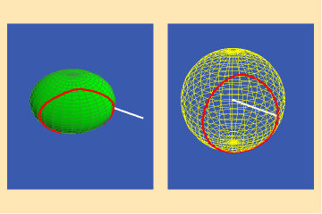
The left panel of the animation shows a normal moving around
a curve on the spheroid. As the normal moves, its changing direction reflects
the changing curvature of the spheroid. In the right panel the changing directions
of this normal are mapped onto a sphere by a moving radius whose direction is
always parallel to the moving normal on the spheroid. Gauss used the area of
the spherical image as a measure of the curvature of the original surface. The
greater the variation in the curvature of the surface, the greater the area
of its spherical image, and vice versa.
Riemann focused on the unique characteristic of these Gauss spherical mappings
for surfaces of physical least-action, such as the catenoid. For such surfaces,
Riemann showed, the Gauss spherical map was always conformal.
This is illustrated in figures 2a and b.
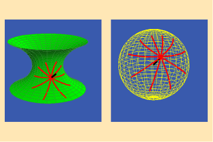
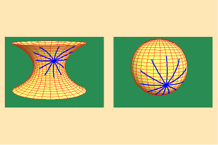
Here we see the Gauss map of a collection of curves on a catenoid
that intersect at equal angles. Notice that the images of these curves in the
Gauss spherical map also intersect at equal angles. Hence, the Gauss spherical
map of the catenoid preserves angles, i.e., it is conformal.
This is not the case for other surfaces, such as the hyperboloid illustrated
in figures 3a and b, and the spheroid illustrated in figures 4a and b.
3 a,b
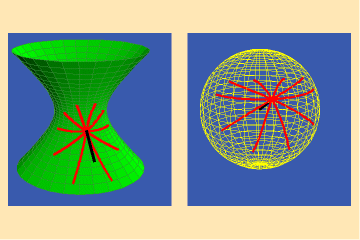
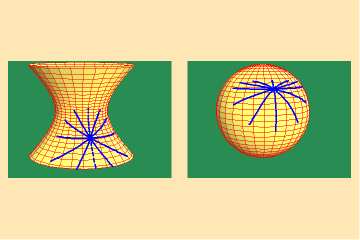
4 a,b
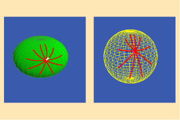
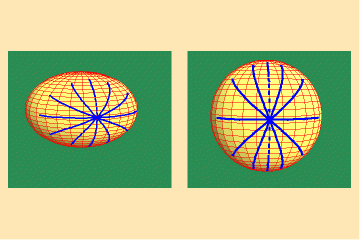
In both cases the curves on the surface intersect at equal
angles, but the angles between their images on the spherical maps are different.
Hence, the Gauss spherical maps for these surfaces are not conformal.
Riemann recognized that the conformality of the Gauss spherical maps of minimal
surfaces reflects the unique physical least-action characteristic of such surfaces–specifically,
that the rate of change of the curves of minimum and maximum curvature is equal,
or, in other words, the minimum and maximum curves were harmonic. (See Riemann
for Anti-Dummies 58 and 60.) It is important to emphasize that this harmonic
relationship is an effect, not a cause. The physical principle of least-action
is the cause. That physical principle is expressed, mathematically, in the harmonicity
of the minimum and maximum curves, and the conformality of the Gauss spherical
maps. But this mathematical property is not significant for abstract mathematical
reason. It is significant because it reflects a physical characteristic and
in so doing, assists us in forming, and communicating, a concept of the essential
characteristics of that physical principle.
But, now Riemann went the next step and inverted the question. Following Gauss,
Riemann understood that complex functions, when represented geometrically on
a surface, produce conformal mappings. Consequently, any complex function could
be thought of as a Gauss spherical map of some physical least-action surface.
Such surfaces were not necessarily visible objects. Rather, they expressed manifolds
of physical least-action, whose shadow, in the visible domain, is a conformal
map. Riemann showed we can work backwards from these conformal maps to construct
an image of the physical manifold of least-action. Such images take the form
of a Riemann’s surface.
The Physical Foundation of Abelian Functions
The physical characteristic of complex functions, illustrated
above for minimal surfaces, is just a particular example of the more general
case of which Riemann spoke in his habilitation dissertation. There he poses
the questions, and proposes the direction by which the true determination of
physical relationships can be discovered. Once we have rejected any {a priori}
axiomatic assumptions, on what do we rely for the determination of physical
relationships? If we rely on the relationships among objects of sense, we will
know nothing about the universal principles that lie outside the sensorial domain.
But, Riemann emphasized, if we cannot rely on the relationships observed among
the objects of sense, the basis for physical relationships “must be sought
for outside that actuality, in the colligating forces (Kraeften) that operate
upon it.”
By colligating forces, Riemann is referring to the universal physical principles,
which, being universal, are acting everywhere on the visible domain from outside.
As Leibniz showed in the initial development of the infinitesimal calculus,
the relationships among the discrete objects of the visible domain are determined
by the continuous, but differential, action of universal principles. Riemann
extended Leibniz’s notion, hypothesizing that when a physical process
is the effect of a multiplicity of universal principles, those principles can
be thought of as constituting a multiply-extended continuous manifold. But these
universal principles are not sensible. Therefore, Riemann said, “there
are in common life only such infrequent occasions to form concepts whose modes
of determination form a continuous manifold, that the positions of objects of
sense, and the colors, are probably the only simple notions whose modes of determination
form a multiply-extended manifold. More frequent occasion for the birth and
development of these notions is first found in higher mathematics.”
In particular, Riemann notes, such concepts of multiply-extended continuous
manifolds arose in connection with his investigation of Abelian functions. To
further our understanding of these manifolds, Riemann developed his method of
representing them as Riemann’s surfaces.
These Riemann’s surfaces, like the Pythagorean sphere, Archytas’s
construction, or Gauss’s surfaces, are not visible objects. They are the
metaphorical images of thought-objects that express the relationships of a multiplicity
of insensible universal principles which are acting together to produce a physical
effect.
From this standpoint, Riemann was able to demonstrate that the essential characteristic
of a multiply-extended continuous manifold is determined by the density of singularities
that that manifold could sustain. This density of singularities, therefore,
indicates the physical “power” or “potential” of the
manifold. Just as Gauss expressed the power of an algebraic equation by a geometrical
characteristic, Riemann showed that the power of a species of functions can
be expressed by the geometrical characteristics of the Riemann’s surface.
These species characteristics, Riemann emphasized, are the primary determinant
of potential action in a physical manifold while other factors, such as variations
among different functions of the same species, are of relatively little importance.
To better understand this concept, it is pedagogically most efficient to work
through a series of animations illustrating Riemann’s surfaces, associated
with manifolds of action of increasing density and power. Each type of Riemann’s
surface is illustrated through an ordered series of animations, comprised of
groups of triple-pairings showing the various characteristics of the surface
from three different viewpoints: flat, 3D and stereographic projection. Each
pair of animations shows an animated trajectory within a continuous manifold
of physical action, and the effect on that trajectory of a complex function.
To grasp the concept of the Riemann’s surface, the viewer must form a
single idea of the effect of the function from the three pairs of animations.
The function is not depicted directly in any of the animations. What is depicted
is merely the effect. {The function is the concept, formed in the mind, of the
characteristics of the principle which has the power to produce the depicted
effect}.
However, as Riemann stressed, the change in density of singularities expressed
by a Riemann’s surface depends, not on the particular function, but only
on the {species} of function (i.e. algebraic, transcendental, elliptical, hyper-elliptical,
etc.). Therefore, what is important to know is not the characteristics of any
particular function, but the characteristics of a species of functions, and
even more importantly, the characteristic of change from one species of function
to a higher species.
This is illustrated in the animations by grouping an entire set of tripled-pairs
into an ordered series illustrating the characteristic of an entire species.
That characteristic is not directly depicted visibly in the animations. Rather
it is evoked as a concept (thought-object) when the mind recognizes the total
potential of that species to produce a change in the action. {It is this cognitive
act, not the visible form, that constitutes the concept of the complex function}.
In this way, the entire set of animations walks the viewer through a succession
of cognitive leaps. First, the leap required to put a pair of animations together.
Then the leap required to put a tripled-pair into a unified idea. Then, the
leap from one tripled pair to the next within a species. Then, the leap from
species to species. Thus, it is not any single animation that presents the idea,
but the cognitive change that is evoked as the viewer moves from one pair, to
the triplet, from triplet to triplet, and from species to species. The animations
themselves are not the idea. They are the vehicles by which the idea is evoked
in the mind of the viewer. The viewer can then reflect on the succession of
thought-objects that have been evoked through an investigation of the succession
of animations. Reflecting back on the entire succession, the viewer can then
form a single idea–a mental animation–of the different qualities
of change embedded in the process.
It is this {change of change} that forms an initial idea of Riemann’s
concept of Abelian functions.
What follows is a series of animations selected from a larger series that was
presented at the recent February 22, 2005 cadre school. (The entire series can
be downloaded from http://wlym.com/animations/riemann61.zip
).
Animations 5a,b, c; 6 a, b, c: and 7 a, b, c; illustrate the effect on a closed
trajectory encircling, none, two and four singularities, with respect to an
algebraic function.
5 a,b,c
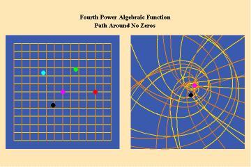
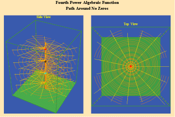
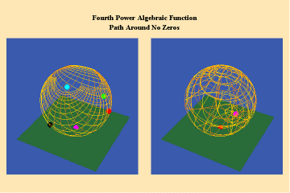
6 a,b,c
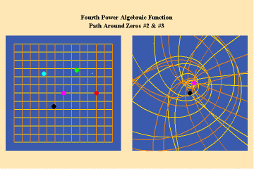
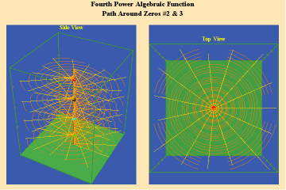
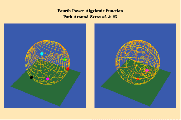
7 a,b,c
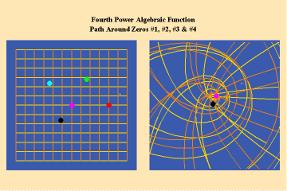
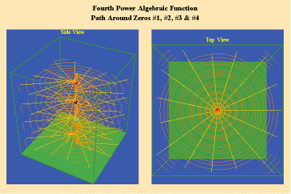
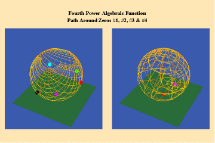
The effect of the manifold of action on this trajectory is to increase the number of rotations by the number of singularities encircled. Since, in this example, the function is a fourth power algebraic function, the maximum potential for change is a quadrupling of effect.
Animations 8a, b; show a different algebraic species of function with an additional,
but different, type of singularity–a pole.
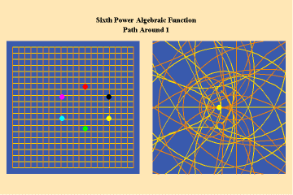
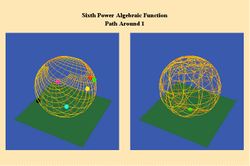
The effect of this type of singularity (pole) can only be seen
in the stereographic, spherical view. Here we see the importance of Riemann’s
insistence on representing his surfaces in spherical form. By using the stereographic
projection, we can see the total potential of the function-- even those effects
which, in the plane, might not be evident because they appear to be “infinitely”
far away. Riemann’s approach, like Cusa’s, treats the “infinite”
not as an indication of something outside the universe, but merely an indication
that something is outside our conceptual ken. With Riemann’s stereographic
mapping we rise above that apparent limitation and recognize that it had only
existed because of a mind-deadening acceptance of Kant’s insistence on
the primacy of Euclidean geometry.
A single trajectory around this singularity is transformed into a triple action
around the “infinite”, which is represented by the north pole of
the sphere in the stereographic projection.
Figure 8c depicts this relationship from the standpoint of a Gauss surface.
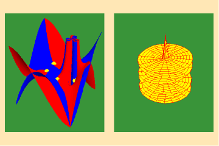
From these four triplets, we can already form an idea of the essential characteristic
of the entire species of algebraic functions. As discussed in the last installment,
the number of sheets of a Riemann’s surface of an algebraic function is
determined by the power of the function. Thus, though any species of algebraic
function will have the potential to increase the effect of an action, depending
on how many singularities (roots or poles) that function can sustain, that potential
will always be finite. Further, as is evident from the spherical view, all the
roots will map to south pole of the sphere and all the poles will map to north
pole. Thus, the Riemann’s surface for any algebraic function will have
only two branch-points, and a finite number of branches.
This limitation of a finite potential is only overcome (transcended), by the
higher species of function–the simple transcendental function. This species
is comprised of the exponential, circular and hyperbolic functions. Again, the
essential characteristics of these functions, which are manifest physically
by the catenary principle of least-action, are easily grasped when viewed from
the standpoint of the relevant Riemann’s surface. These surfaces are depicted
in animations 9a, b, c; 10, a, b, c: and 11 a, b, c; which illustrate a complex
circular function (sine).
9 a,b,c
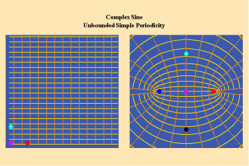
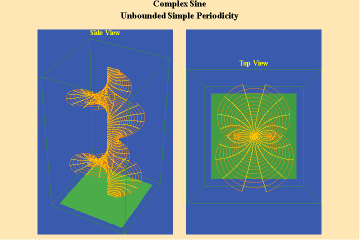
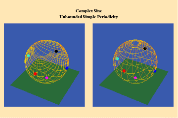
10 a,b,c
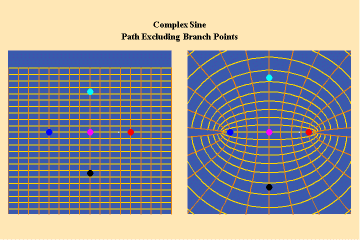
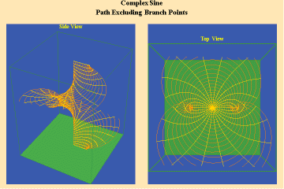
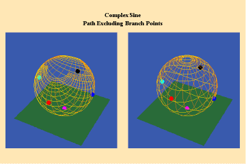
11 a,b,c
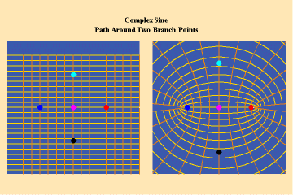
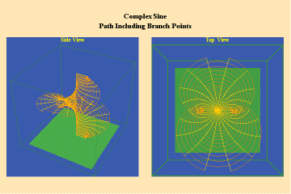
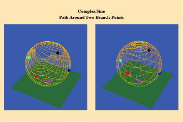
These functions are distinguished from the algebraic because
they have an unbounded potential. This can at first be illustrated in animations
9, which shows the effect of a transcendental manifold on two perpendicular
trajectories. In the left panels both trajectories appear to extend into the
“infinite”. But in the right panel, one of the trajectories is transformed
into a periodic ellipse. The unbounded nature of this periodicity can be seen
in the stereographic view (9c). In the left, both trajectories are seen to approach
the “infinite” represented by the north pole. On the right, the
image of one of these trajectories becomes periodic, while the other remains
aperiodic. Since the periodic trajectory is an image of an process on the left
that is unbounded, its periodicity is also unbounded.
From this geometry we can see that a Riemann’s surface of this species
of function will have two branch points, but an unbounded number of branches.
Hence, it expresses a greater power for action than any possible algebraic function.
Animations 10 show a trajectory that encircles no branch points. Animations
11 shows a trajectory that encircles two branch points, producing a doubling
effect around each branch point.
From these three triplets we can form a concept of the power of this simplest
species of transcendental. It surpasses the power of the algebraic because its
power is unbounded. But it exhibits a new type of boundary, specifically, the
limit imposed by having only two branch points.
This new type of boundary is overcome by the next species of transcendental–the
elliptical transcendental. This transcendental species is associated with a
manifold of physical action in which two universal principles combine to produce
one single effect. As, for example, in the case of elliptical motion in which
motion along the arc of the ellipse is incommensurable with both the sine and
the angle (as distinct from circular motion in which the arc is incommensurable
with the sine, but commensurable with the angle).
Riemann showed that the essential characteristic of the elliptical transcendentals
is expressed by the double periodicity of the action on the Riemann’s
surface. (Gauss had already discovered this property by 1798, but never published
his results. The extent of his work in this area was not publically known until
the 1890's.)
Like the simple transcendentals, but unlike the algebraic, the elliptical transcendentals
have an unbounded potential. But, the elliptical transcendentals surpass the
power of the simple transcendentals because they are doubly-periodic. This characteristic
is depicted in animations 12 a, b, c;
12 a,b,c
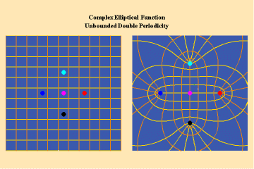
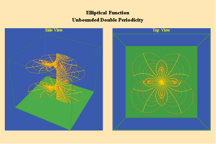
This triplet depicts two perpendicular trajectories which, in the left panels, appear to go off into the “infinite” being transformed into unbounded but periodic trajectories, as depicted in the right panels. Again, this characteristic can only be truly grasped from the viewpoint of the stereographic projection. This double periodicity of the elliptical transcendental produces, in the Riemann’s surface, four branch points and an unbounded number of branches.
Animations 13 a, b, c; 14 a, b, c; and 15 a, b, c; illustrate a trajectory within
this elliptical manifold circling two branch points, two different branch points
and all four branch points respectively.
13 a,b,c
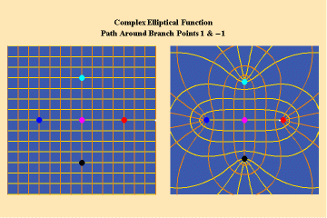
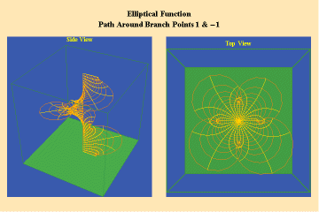
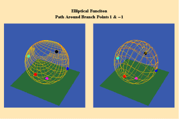
14 a,b,c
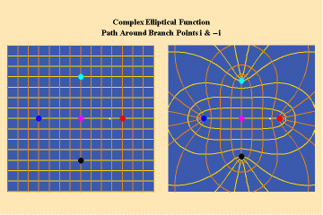
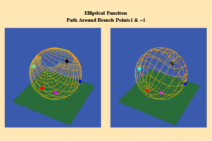
15 a,b,c
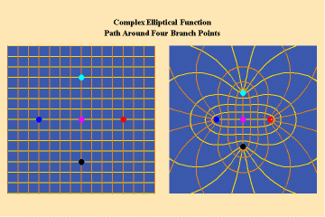
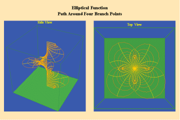
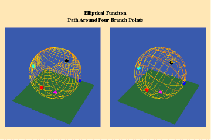
From this standpoint, it can be easily seen that manifolds
of physical action characterized by the elliptical transcendentals, having the
potential to sustain a greater number of singularities (branch points), have
a potential to produce a greater physical effect and, as such, are of a higher
power than the simple transcendentals.
Finally, think back on this entire process, from a standpoint above the characteristics
of each particular species of function. Think of the power of mind by which
you can conceive of an entire species of functions by their power to sustain
a greater density of singularities and thus a greater power to produce a physical
effect. Think of the power of mind by which you can conceive of the power to
change from one species to the next higher species. Think of the power of mind
by which you can extend this thought beyond the elliptical and into that extended
class of transcendentals now known as Abelian functions.
That is the power of mind through which, “progress in perceiving the connection
of things shall not be obstructed by the prejudices of tradition.”